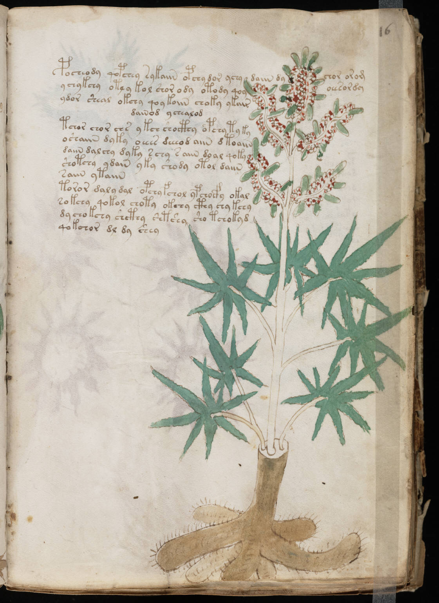

f16r
1pocheody qopchey sykaiin opchy dor ychy daiin dychor orom2ychykchy otly kol shor ody otody qoyoeesordy3ydor sheal okchy qoy koiin choky ykair4dainod ychealod5tchor chor chs ykch shocthy opchy ty ky6oshaiin dyky oeees deeeod aiin dtoaiin7daiin dalchy dyky schy saiin doal qoky8shotchy ydain yky shody otol daiin9saiin ytaiin10toror dalydal opchy fchol ypchocfy okal11sokchy qokol chotyokchy cthy chy kchy12dychokchy shcthy shtshy sho tchokyd13qokchor dl dy shey
